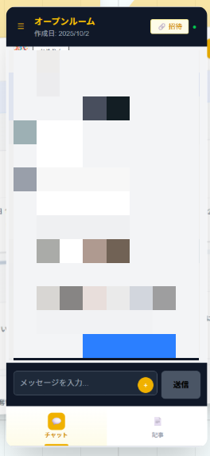
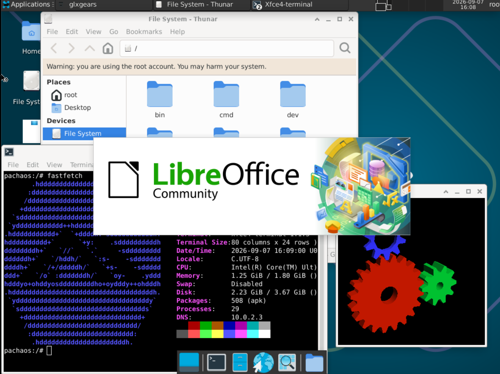
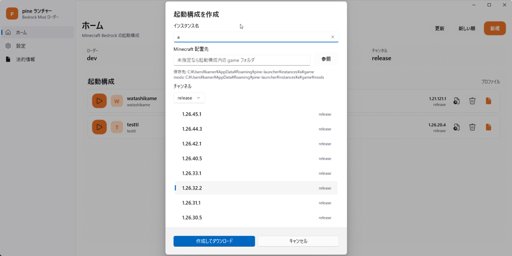
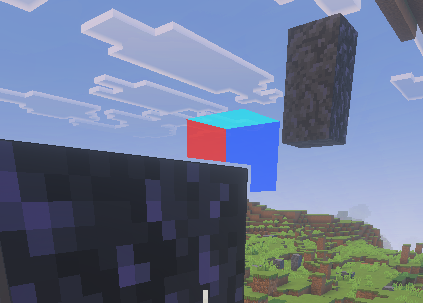
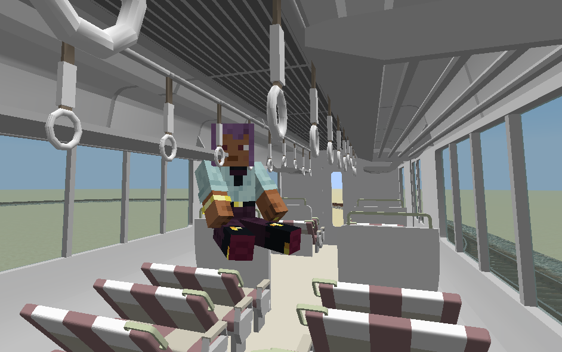

c/cpp/zig/go/js/python/rust
半年ぐらいRustやったけど結局脳に入らなくてやめちゃった またリベンジする機会があれば
python pytorchとかfastapiとかflaskとかいろいろやってた
c 汚コード書きます
cpp たまに使うがクラス設計わからん 黒魔術もわからない
Composing OS extensions safely and efficiently with Bascule
zpoline: a system call hook mechanism based on binary rewriting
seL4: formal verification of an OS kernel
Rethinking the library OS from the top down
やる気のないatcoderBSDカーネルの設計都実装改訂2版
Qwen3.8-27bしか使ってない無知
rx9060xt 16gbとrtx3050 8gbのいかにも遅そうな構成でvulkanでやってるけど27bなら使える
メインpc:Windows11とUbuntuのデュアルブートだけどGentoo Linuxにする予定
2019mbp T2 Arch Linux
パスワードを平文で保存したり、apiを叩けば非公開のチャットが見れたり、ログインをバイパスする抜け道もあったが、そろそろ2年目になるチャットアプリ

最近ずっと作ってる自作OS 名前にそこまで意味はない
カーネルはfd-based microkernelというマイクロカーネルを名乗ってて、Untyped memory&CNodeベースのマイクロカーネルに比べてPOSIXと親和性が高いところとcapability的なアクセス権限の両立をしているのが特徴
しかもなぜかカーネルはZig製 x86_64のみ対応
過酷なやり方でext4移植したけど、意外と動いてくれてます
互換レイヤーで勝つ

↑xfce4-terminelでfastfetchを見せつけながらthunarとglxgearsを動かし、libreoffice writerが起動してる途中の写真
LKLに似たカーネルの最下層をポートするアプローチを使ってLinuxのドライバをユーザー空間で動かすプロジェクト
ビルトインカーネルをさらに細分化し部品ごとに共有ライブラリとしてリンクすることで、バイナリサイズを小さくしている
Linuxは分離されたsandboxプロセスとして動くためGPLライセンスを回避していたりSMPが有効になったりしていて、面白い
kobox1は割愛
随時更新
Minecraft統合版向けのランチャー
バージョンを変えたり、dllをインジェクションしたりできる Modローダーではない


深度バッファーを取得して立方体を描画したけどおかしくなったやつ ここであきらめ LeviLaminaのdllをリバースエンジニアリングして作った
小学生のころやっていたことを思い出し、codexで作っていたが、なんとほぼできてきたタイミングで全く同じものを公開してバズってる人が別にいたため、没に(早めに公開しようという教訓)
